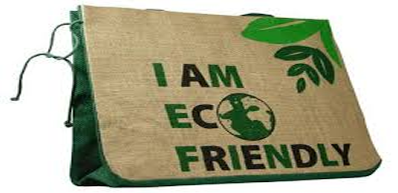
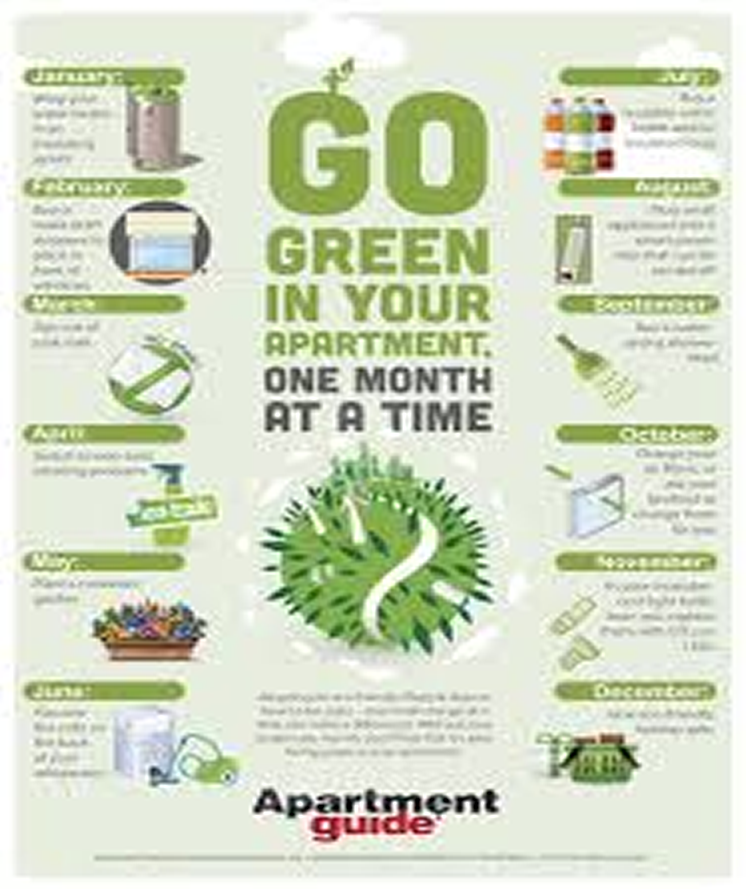

What does Eco-Friendly Mean?
When a product uses the label of eco-friendly it is meant to communicate that the product can be used without harm to the environment. However, just because a product is labeled as eco-friendly doesn't mean it's 100% eco-friendly in every single way. 
What does Sustainability mean ?
Sustainability means meeting our own needs without compromising the ability of future generations to meet their own needs. In addition to natural resources, we also need social and economic resources. Sustainability is not just environmentalism.
Eco Friendly Products
Eco-friendly products are “products that do not harm the environment whether in their production, use or disposal”. In other words, these products help preserve the environment by significantly reducing the pollution produced
There are many ways to reduce the environmental pollution that stems from your home simply by choosing eco friendly products.
-
Certified Compostable Bin Liners. ...
-
Recycled Plastic Toothbrush.
-
Reusable Bulk Food Bags
-
Reusable shopping Bags
-
Eco Friendly Phone Cases
-
Recycled Plastic Belts
-
Recycled Plastic Rugs. ...
-
Ballpoint Pens Made From Recycled Water Bottles.
-
Recycled Plastic Mat for Yoga and Beach
-
Etc …….


What is Sustainable Products ?
Sustainable products are those products that provide environmental, social and economic benefits while protecting public health and environment over their whole life cycle, from the extraction of raw materials until the final disposal.
The Examples of Sustainable products are :
-
Reusable Lunch Wraps. ...
-
Recycled and Recyclable Cutlery. ...
-
Vortex's Rechargeable Crank Flashlight. ...
-
Compostable Party Plates. ...
-
Compostable Bowls. ...
-
Travel Pouch Made From Recycled Bike Tubes. ...
-
Sustainable Travel Towels.

What Is the Difference Between Eco Friendly and Sustainable?
It’s not unusual for people to interchange the words eco-friendly and sustainable. In most cases, you wouldn’t even be making a mistake because both these terms focus on social responsibility and environmental awareness. If we were to get into the nitty-gritty of each subject, you would realize that they do, in fact, have significant dissimilarities that are important to put out there.
Eco-friendly isn't quite so broad. It means that something doesn't harm the planet. But sustainable is the most precisely defined term here and represents the wide scope of issues and activities
Let’s steer you away from muddled territory by offering some guidelines on how to differentiate these two closely-related green terms. While we’re at it, we’ll also cover the relationship between the words clean and non-toxic, conscious and thoughtful, and ethical and fair trade to help you make wiser product purchases in the future.